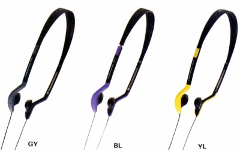

TH-V1

■価格 2,000円■型式 オープンバックダイナミック型■振動板 15�o■インピーダンス 32Ω■再生周波数帯域 20-20,000Hz■許容入力 40mW■感度 100dB/mW ■コード 1.5ｍOFCL型ステレオミニプラグ■重量 24g（コード含まず）■発売 1997年1月31日■販売終了 ？■備考 ネオジウムマグネット使用1998年6月版カタログに記載
テクニカのインデックスへ